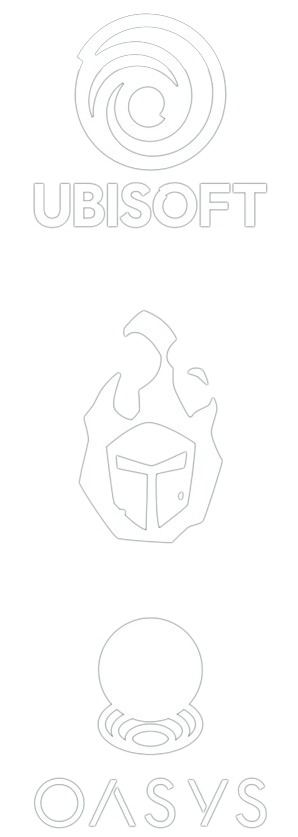

ABOUT THE GAME
Champions Tacticstm Grimoria Chronicles is a brand new PVP
Tactical RPG experimental game on PC currently in development
at Ubisoft. Assemble a team of mythical Champions,engage in thrilling
tactical battles against other players and discover the legends of the
dark and mythical world of Grimoria. Are you ready to write your name
in the Chronicles?
Grimoria is no ordinary world;its a realm of mystique,magic, and
untold legends.As a player, you will have the priviledge to explore the
enchanting landscapes,unravel the hidden secrets, and dive deep
into the captivating lore.
Its a game into the futureof gaming.It weaves storytelling, strategy,
blockchain technology, and community-driven engagement into a
tapestry of pure excitment
